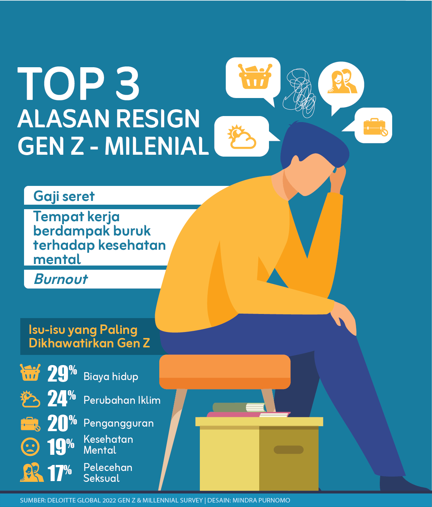

Ada 3,6 juta Gen Z usia 15-24 yang menganggur tahun ini, separuh (50,29 persen) dari total pengangguran terbuka. Jika ditambah mereka yang tergolong bukan angkatan kerja tetapi tidak sedang sekolah atau pelatihan, sebutannya Not in Employment, Education or Training (NEET). Jumlahnya mencapai 9,9 juta.
Gen Z Memang Pemalas atau Dimiskinkan?

Scroll
kebawah
Generasi Z lekat dengan stereotipe tech savvy , kreatif, dan melek finansial. Mereka kerap dicap pemalas, manja, dan rapuh. Faktanya, saat mencari kerja, Gen Z dihambat oleh faktor struktural.
Banyak di antara anak muda lahir pada 1997-2012 yang menganggur ini telah mengirim ratusan surat lamaran dalam hitungan bulan, tapi tak kunjung mendapat panggilan. Adanya tren pergeseran industri dari padat karya ke padat modal, artinya semakin sedikit kebutuhan tenaga kerja formal dan persaingan masuk pasar kerja makin ketat.
Di sisi lain, Gen Z juga tak luput dari kondisi prekariat yang dimungkinkan oleh UU Cipta Kerja, seperti upah rendah, jam kerja panjang, problem fleksibilitas sistem outsourcing , dan rentan diputus hubungan kerja. Gen Z melek dan kritis soal kesehatan mental dan hak-hak pekerja, ada pula yang menolak pekerjaan atau berhenti bekerja atas pertimbangan upah maupun kondisi kerja yang tak layak.
Gen Z yang Menganggur
Sumber: Sakernas Februari 2024
Jumlah Pengangguran
Gen Z Usia 15-24 tahun
2.204.494
Laki-Laki
1.413.806
Perempuan
9,9 Juta dari 44 Juta Anak Muda Tak Punya Kegiatan (NEET)
Sumber: Indikator Pekerjaan Layak di Indonesia Vol.7 2024Berdasarkan tingkat pendidikan yang ditamatkan.
Gen Z Lebih Sedikit Terserap Kerja
Semakin tinggi nilai employment to population ratio (EPR), artinya semakin banyak tenaga kerja yang terserap.

Pengangguran Usia Muda Mendominasi dari Tahun ke Tahun


Faktor Gen Z dan Lulusan Baru Susah Bekerja
Proporsi Pekerja Formal dan Informal

Pekerja informal mendominasi dalam 10 tahun terakhir dan jumlahnya konsisten meningkat, sedangkan pekerja formal cenderung stagnan. Oleh karena kondisi ini, banyak orang termasuk Gen Z yang terjun ke gig economy , misalnya ojek online. Studi Permana, dkk (2023), menggunakan data Sakernas 2019, mengestimasi 140 ribu hingga 900 ribu orang Indonesia menjadikan pekerjaan gig sebagai pekerjaan sampingan. Padahal, pekerja gig rentan terhadap guncangan ekonomi, stres, waktu kerja terlalu panjang, dan kejahatan siber.
Karakteristik dan Preferensi Karir Gen Z di Indonesia
Work Life Balance
Ingin kerja
remote
alih-alih
ngantor
Gaji Komponen Penting

Penulis
Alya Nurbaiti
Editor
Dieqy Hasbi Widhana
HTML5
Dedi Arief Wibisono
Desain Grafis
Mindra Purnomo